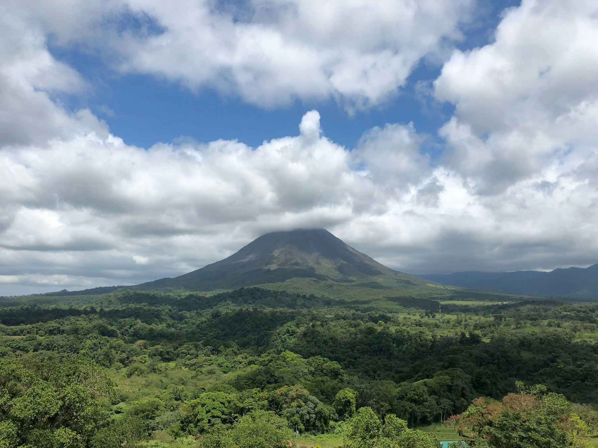
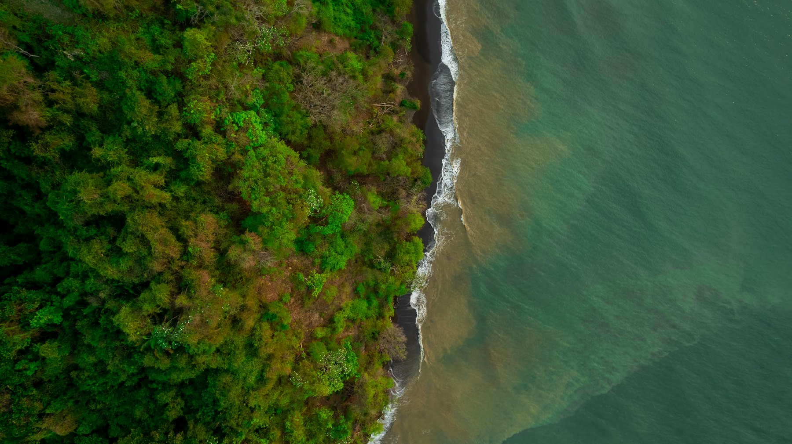
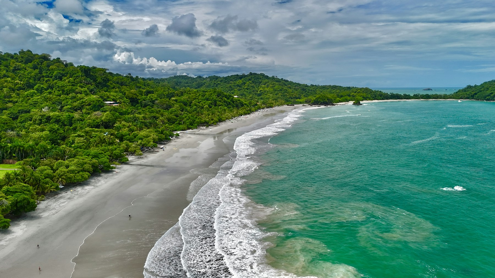

Guanacaste
The Pacific northwest: dry forest, howler monkeys, and long beaches such as Tamarindo, Nosara, and the Papagayo gulf.
Good for sun, swimming, and surf
A guide for a first visit
Pura vida is the local shorthand for hello, thanks, and don’t hurry. The country behind it is compact: coffee hills, a perfect cone of a volcano, dry forest, and rainforest that runs into the Pacific and the Caribbean. This page is what is worth your time, plus an eight-day loop a first-timer can follow.

At a glance
Regions
You do not need all of these in one trip. Pick a coast, a volcano, and one forest, and the week will already feel full.
The Pacific northwest: dry forest, howler monkeys, and long beaches such as Tamarindo, Nosara, and the Papagayo gulf.
Good for sun, swimming, and surf
The cone of Arenal, hot springs, hanging bridges, and the La Fortuna waterfall. The most straightforward volcano stop in the country.
Good for a first volcano and an easy base
Cloud forest on the continental divide. Cooler, misty, and full of birds. A quetzal is possible with a guide and some luck.
Good for forest, canopy walks, and cooler nights
San José and the coffee highlands. Cooler evenings, coffee tours, and day trips up to the craters of Poás and Irazú.
Good for arrival, departure, and coffee
Manuel Antonio and Quepos. A national park where monkeys, sloths, and a swimable beach sit a short walk apart.
Good for wildlife and beach in one stop
Puerto Viejo, Cahuita, and the Tortuguero canals. Afro-Caribbean food, a slower pace, and rain on its own schedule. Tortuguero is reached by boat.
Good for a different coast and canal wildlife
Corcovado and primary forest at the end of the road. Remote, richer in wildlife, and better as the focus of a trip than a quick add-on.
Good for a wilder second visit, or extra days
Map
The same stops as the guide, in the country. Tap a pin for details and directions. Amber pins are on the eight-day loop, teal pins are worth extra days, and each icon shows the kind of place.
The map needs JavaScript and a connection to load.

Weather
The two coasts run on different calendars. On the Pacific side and in the Central Valley, the dry season runs from December to April and the rains come from May to November, heaviest in September and October. The Caribbean side gets rain all year, with drier spells around February and March and again in September and October, just when the Pacific is wettest. Tap a pin on the map for the current weather there.
| Region | Jan | Feb | Mar | Apr | May | Jun | Jul | Aug | Sep | Oct | Nov | Dec |
|---|---|---|---|---|---|---|---|---|---|---|---|---|
| Pacific and Central ValleyGuanacaste, Manuel Antonio, Osa, San José | Dry | Dry | Dry | Dry | Rainy | Rainy | Rainy | Rainy | Wettest | Wettest | Rainy | Dry |
| CaribbeanPuerto Viejo, Cahuita, Tortuguero | Rainy | Drier | Drier | Rainy | Rainy | Rainy | Rainy | Rainy | Drier | Drier | Rainy | Rainy |
Sources: Instituto Meteorológico Nacional, climate regions of Costa Rica; daily precipitation at Limón. Current conditions from Open-Meteo.
What to do
Names and what to expect. Hours, fees, and trail conditions change with the season, so confirm them before you go.

The sun is strong, and Pacific beaches can have rip currents. Swim where other people are, and ask locally that morning.
A guide is worth it. Dawn is when animals are moving.
Suggested loop
A first-timer route: Central Valley, Arenal, Monteverde, then Manuel Antonio. Adapt the nights if you already care more about surf or the Caribbean. This version leaves those for another trip on purpose.
Most flights land at Juan Santamaría (SJO), outside the city. After a long flight, stay in the valley instead of driving on. Eat, sleep, and if the afternoon is still kind, a nearby coffee stop is enough.
The shuttle is about three hours. Arenal is often clear in the morning and wearing cloud by afternoon, so go to a viewpoint when you arrive if the sky is open. The summit itself is closed.
Walk a hanging-bridge trail while it is cool. The La Fortuna waterfall is a steep side trip with a swim at the bottom if you want it. Save the hot springs for late afternoon. Pools range from simple to resort-scale.
The link from La Fortuna is a rough, scenic ride of about three hours. The classic jeep-boat-jeep crosses Lake Arenal and skips some of the mountain road. Arrive, walk the town, and leave the reserve for morning.
Enter the cloud-forest reserve when it opens, with a guide if you can. Mist and birds are the point; a quetzal is luck, not a promise. An afternoon canopy bridge and a guided night walk show two different versions of the same forest.
Plan on about four hours and treat it as a travel day. If you arrive with daylight, swim near where you are staying. Quepos, just north of the park, is the easier place to eat.
Be at Manuel Antonio National Park when it opens. The trails are short and often busy with white-faced monkeys and sloths. Swim at the park beach, then leave the rest of the day unplanned. Check hours before you go.
The drive back to SJO is about three hours. Leave a wide gap before an international flight. A late departure is calmer from a valley hotel than from the coast.
Before you go
Shared shuttles are the straightforward way between the towns on this loop. Domestic flights help if you add Liberia, the Caribbean, or the Osa. A rental car is reasonable if you are comfortable on winding mountain roads in rain.
Keep transfer days free of big hikes. A night drive on a mountain road is slow, and the useful scenery is gone anyway.
Cards work in towns. Smaller sodas (neighborhood restaurants), some park snacks, and tips are easier with cash. ATMs are in the towns on this route.
Ask which currency a price is in before you agree. Dollars and colones both show up on menus.
Evenings in Monteverde and the Central Valley are cool. The coast will not need the layer the cloud forest does.
Keep an eye on bags in San José and on busy beaches. Leave passports and electronics in the hotel, not in a parked car. Swim at spots people are already using, and treat rip currents as the thing to ask about.
In green season, heavy rain can slow or close mountain roads, so an unhurried transfer day is part of the plan. Tap water is treated in most towns; ask at a small lodge if you are unsure.